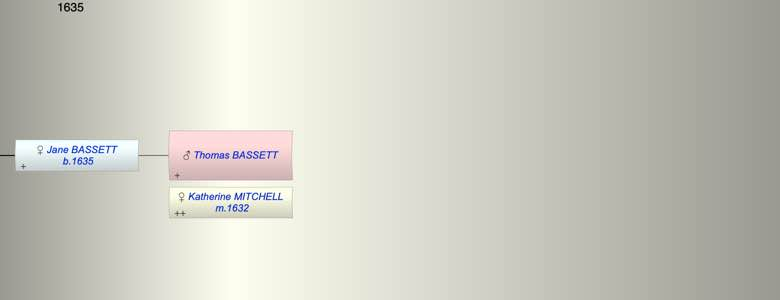

| [Index] |
| Thomas BASSETT |
|  |
| m. 29 Nov 1632 Katherine MITCHELL at St Laurence |
| Children (1): |
| Jane BASSETT (1635 - ) |
| Grandchildren (5): |
| Thomas CURLING (1653 - ), Elizabeth CURLING (1655 - ), Jane CURLING (1658 - ), Katherine CURLING (1662 - ), John CURLING (1664 - ) |
| Events in Thomas BASSETT's life | |||||
| Date | Age | Event | Place | Notes | Src |
| 29 Nov 1632 | Married Katherine MITCHELL | St Laurence | ex FMP PR | ||
| 1635 | Birth of daughter Jane BASSETT | St Laurence | Note 1 | ||
| Note 1: baptised at St L 3 Oct 1635 dau of Thomas ex FMP PR |
| Personal Notes: |
|
Basset, Thomas, of S. Lawrence in Thanet, baker, ba., about 30, and Catherine Knowler, s. p., w. of Anthony Knowler, late s. p., dec.
At S.Margaret's Cant. Nov. 28, 1032. (presumably 1632). |
| Created on a Mac™ using iFamily for Mac™ on 8 Oct 2023 |